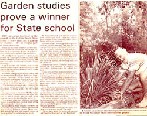
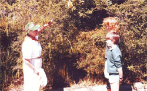
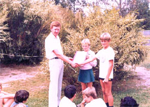
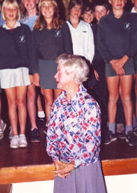
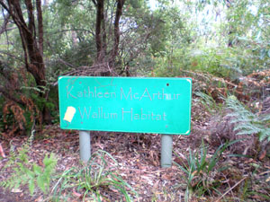

- Working with Golden Beach State School
- A report from the school
- The Kathleen McArthur Wallum Habitat
Since 1982 the preservation and nurturing of the natural environment at Golden Beach State School has set a fine example for other schools, organisations and individuals.
Kathleen McArthur was invited to identify plants in the school grounds and from there grew a love of working with this school’s children and staff. One of her books––The Little Fishes of Pumicestone Passage––was inspired by the close ties she developed, and by a desire to reach out to a young audience.
To this day Golden Beach State School honours her memory with the Kathleen McArthur Wallum Habitat and other gardens within the school grounds.
© WPSQ, Sunshine Coast & Hinterland Inc
In late 1982, as Golden Beach State School buildings neared completion, a bulldozer arrived to clear wallum heathland for play areas. Principal Len Fox successfully negotiated the retention of large patches of natural vegetation. The school opened the following year, and after expressing initial concern about the aesthetic value of these native plants the school community was delighted by abundant and widely varied flowerings in late winter.
Unfortunately no-one associated with the school knew much about this flora, and Caloundra conservationist and botanical artist Kathleen McArthur was invited to identify plants and talk about their characteristics to teachers and students. She, too, was delighted to see a wealth of Aotus, Wedding Bush, Dillwynia, Boronia and, of course, Banksia aemula, which was adopted as the school emblem. Kathleen was equally pleased to find numerous rare species, and saw the promotion of the school gardens as an opportunity to preserve a wallum habitat and educate the community.
In 1985 Year 7 students began researching the school’s flora. Kathleen and Ken Whittaker assisted staff develop a nature trail through the wallum, where over fifty plants were identified. An album with information and photographs was prepared for student and community reference.
Through her work with children in Years 6 and 7, Kathleen decided to launch her latest book with their help. On 25 July 1985 around sixty students performed songs and sat on the stage at the CCSA Hall for the official launch of Little Fishes of Pumicestone Passage. This cemented Kathleen’s association with the school, and celebrated her huge contribution to community knowledge about the local environment and her galvanising of positive attitudes towards local plant species.
For many years Year 6 and 7 students guided visitors to the school along the native plant trails. Kathleen continued to visit the school and work with students and teachers as interest in this wonderful natural resource grew. The parent body spent many hours improving walkways through the heath, delineating boundaries with logs to protect the plants.
There was excitement at the discovery of a rare plant species, Acacia attenuata, on a tract of wallum on the school’s southern boundary purchased in 1995. Community interest grew with this additional attraction, and it was doubly fitting that the new area was officially named the Kathleen McArthur Wallum Habitat on World Environment Day, on 5 June 2001. Two pupils identified from a photograph of the launch of Little Fishes of Pumicestone Passage––and now young mothers––were invited to attend the dedication ceremony, symbolising an enduring community interest in the local environment triggered by Kathleen’s association with the school.
The last twenty years has strengthened community focus on Golden Beach State School’s bushland. In 1998 Ann Moran completed a comprehensive list of plants, which confirmed the depth and accuracy of Kathleen’s botanical knowledge. John Eley, Kay Dann, John O’Connor and Noreen Prendergast initiated numerous projects and dedicated gardens. Environmental organisations, the local Council and developers provided support, helping to direct the focus on building a rich school environment into the 21st century.
With an enduring community interest in the Kathleen McArthur Wallum Habitat and gardens, these special areas of Golden Beach State School are assured of careful preservation, along with the memories of a wonderful environmental pioneer––Kathleen McArthur.
Ken Whittaker
Deputy Principal
Golden Beach State School
November 2008
Sunshine Coast Weekly 6–12 June 2001
SCHOOL HONOURS ENVIRONMENTALIST
Wallum habitat an honour for McArthur
By Leanne Edmistone
A native wallum habitat has been named after well-known environmentalist Kathleen McArthur for her contribution to environmental studies at Golden Beach State School.
A special parade was held on world Environment Day yesterday, to dedicate the original, undisturbed pocket of wallum marsh in the school grounds to Ms McArthur, who recently passed away.
Principal Dennis Downs said Ms McArthur played a key role in developing the school’s environmental program, helping to identify native and endangered species and establish native reserves in the school grounds. Mr Downs said environmental issues were a major part of the school’s curriculum, with all students currently participating in about ten projects, including a butterfly habitat and frog breeding area.
‘We have a focus on environmental education, because we consider it so important and we have had a major opportunity to preserve a few areas in their natural form as well as planting other gardens,’ he said.
Guests at the parade included Wildlife Preservation Society president Arnim Scheer, Ms McArthur’s sister Judy Nelson-Gracie, WPS member Isabel Jordan, local councillor Chris White and Bilai Education Centre principal Allan Egan.
As well as erecting a large sign, each class planted a native tree as a border around the special area, which also contains a rare and endangered species of wattle.
Reproduced with permission of Sunshine Coast Newspapers
© WPSQ, Sunshine Coast & Hinterland Inc